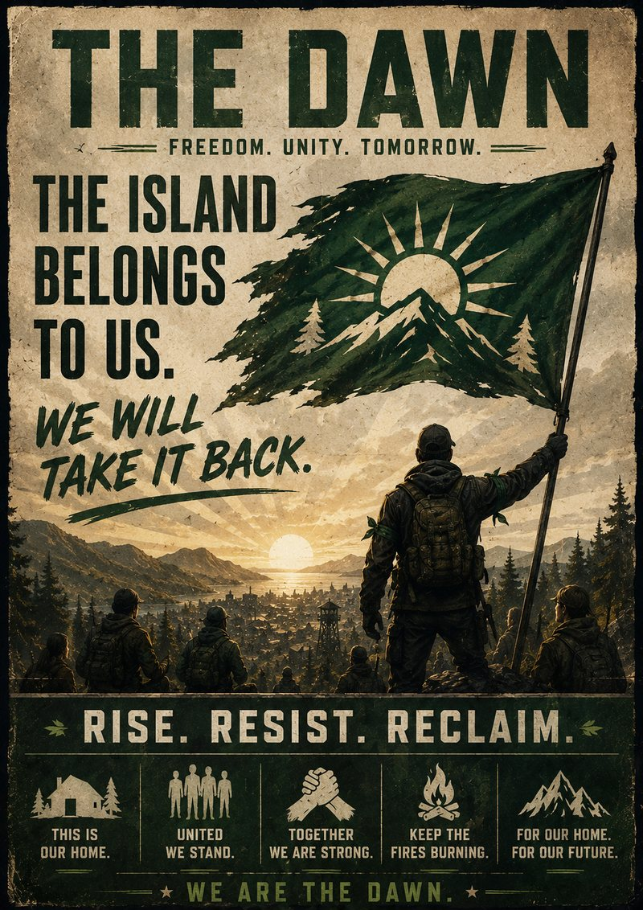
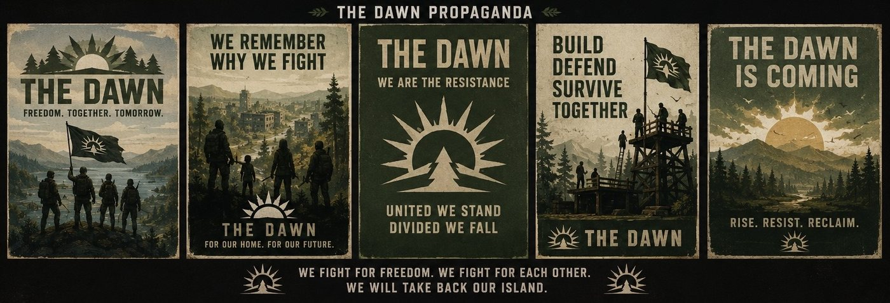

If you're holding this, someone trusted you. That's not nothing anymore. Read it once, learn it, then move it along or burn it. They search for paper now.
What it was like before
You probably remember. If you're young, ask someone who does.
The docks ran loud every morning. The mill never stopped. Kids walked to school without papers. The power went out sometimes and we complained about it like it was the worst thing in the world. We didn't know. God, we didn't know how good the worst thing in the world used to be.
It wasn't perfect. It was ours. Nobody asked your name at a checkpoint to let you walk to your own mother's house.
How they took it
Slow. That's the part nobody believes until they've lived it. Nobody kicked the door in on day one.
First it was jobs. Then it was cameras, "for our safety." Then a curfew, "just for a while." Each thing alone, you could live with. That was the trick. By the time it was bad enough to fight, fighting was already treason.
They never conquered us. We agreed to it, one reasonable little step at a time, until there was nothing left to agree to.

Where we came from
We weren't soldiers. Most of us still aren't.
It started small. A fisherman who hid fuel from a patrol. A mechanic who kept fixing trucks for families who weren't allowed to travel. A teacher who buried the real books in her yard so the kids would know what was taken. An old soldier who showed scared people how to not be scared.
Nobody founded us. There's no headquarters. There's no general. That's our strength and they can't understand it — you can't behead a thing that has no head. Burn one camp and another lights its fire that night.
The name
Somebody said it around a fire, back in the bad winter. Morning always comes.
We don't know who. Doesn't matter. It went mouth to mouth through the forests until it stopped being a sentence and started being a name.
We didn't pick it because we think we'll win. We picked it because the night doesn't get a vote on whether the sun comes up.
What we believe
They want you obedient. We want you free — and free is harder, because free means you have to choose, and choosing is frightening when they've made fear the only currency left.
They built walls and called it safety. We keep fires and call it home.
They watch. Fine. Let them. A camera can see a man walk into the woods. It can't see what he decides while he's in there.
What you can do
You don't have to carry a rifle. Most of us don't, most days.
Hide a neighbor. Move a message. Feed someone who's hungrier than you. Remember a name they wanted forgotten. Teach a kid the real history. Paint over one of their posters and let them spend the morning scrubbing it.
Every small thing is a brick. We are building something they can't see yet.

What to do when it's hard
It will be. Camps fall. People you love will be taken, and some won't come back, and there will be nights the whole thing feels like a story we tell ourselves to keep from freezing.
Keep going anyway. Not because we're sure. Because surrender is the only guaranteed way to lose.
"THEY TOOK OUR HOME. WE'LL TAKE IT BACK." — "WE REMEMBER." — "GOOD. LET THEM WATCH."
For a lot of us, that's what The Dawn really is. Not revenge. Not war. Not politics. Just the belief that one day, when the fighting is over, the island belongs to its people again. And when that day comes — the Dawn will finally arrive.